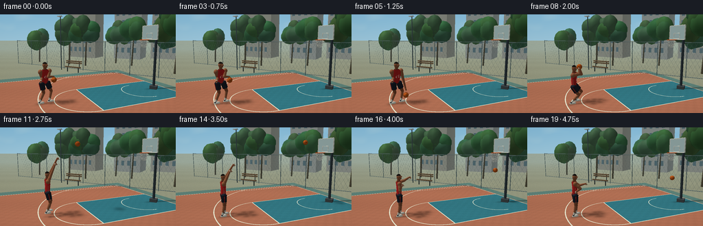
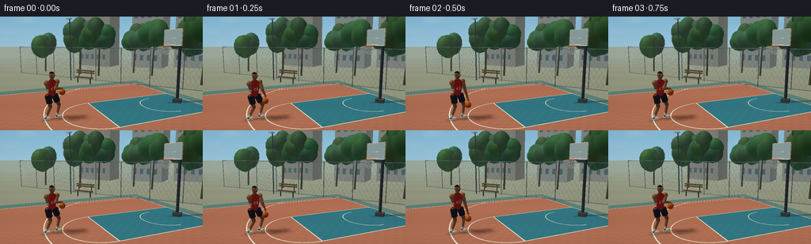
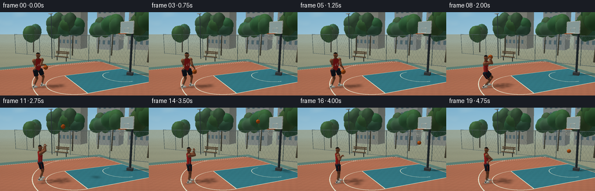
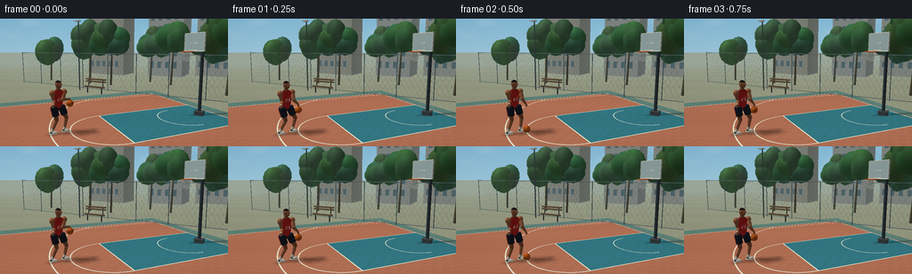

CODING AGENTS AS PIXEL WORLD MODELS
traex/GPT-6.1-Sol · instance_preservation_0034
点击播放 · 原生 RGB 像素
逐轮保存的候选
回放视频、检查图与代码变化。
每份候选均可单独播放。实际图片检查记录在下方工具轨迹中。
候选 01播放与检查图
点击播放 · 原生 RGB 像素


展开代码变化
--- 上一保存版本
+++ 本次保存版本
@@ -0,0 +1,575 @@
+"""Deterministic text-only basketball animation. Uses only numpy/Pillow geometry."""
+from pathlib import Path
+import json, math
+import numpy as np
+from PIL import Image, ImageDraw, ImageFilter
+import artifact_io
+
+ROOT=Path(__file__).resolve().parent
+SPEC=json.loads((ROOT/'task_spec.json').read_text())
+W,H=SPEC['width'],SPEC['height']; SS=3; SW,SH=W*SS,H*SS
+rng=np.random.default_rng(37)
+CAM=np.array([5.,3.2,8.]); TARGET=np.array([.5,1.84,0.])
+F=260.*SS
+FW=(TARGET-CAM); FW/=np.linalg.norm(FW)
+RIGHT=np.cross(FW,[0,1,0]); RIGHT/=np.linalg.norm(RIGHT)
+UP=np.cross(RIGHT,FW)
+LIGHT=np.array([-.42,.84,.35]); LIGHT/=np.linalg.norm(LIGHT)
+HOOP=np.array([2.7,3.05,-2.8])
+N=np.array([-.60,0,.80]); SIDE=np.cross([0,1,0],N)
+
+
+def unit(v):
+ v=np.asarray(v,dtype=float); return v/(np.linalg.norm(v)+1e-10)
+
+def mix(a,b,t): return np.asarray(a)*(1-t)+np.asarray(b)*t
+
+def ease(t):
+ t=np.clip(t,0,1); return t*t*(3-2*t)
+
+class Mesh:
+ def __init__(self): self.v=[];self.norm=[];self.color=[];self.faces=[]
+ def surface(self,verts,normals,colors,faces):
+ offset=len(self.v)
+ self.v.extend(verts);self.norm.extend(normals)
+ if np.ndim(colors)==1: self.color.extend([colors]*len(verts))
+ else: self.color.extend(colors)
+ self.faces.extend([tuple(offset+i for i in f) for f in faces])
+ def quad(self,p,color):
+ p=np.array(p);n=unit(np.cross(p[1]-p[0],p[2]-p[0]));self.surface(p,[n]*4,color,[(0,1,2),(0,2,3)])
+ def box(self,center,sz,color,axes=None):
+ c=np.array(center);ax=np.eye(3) if axes is None else np.array(axes)
+ points=[c+ax.T@(np.array([i,j,k])*np.array(sz)/2) for i,j,k in [(-1,-1,-1),(1,-1,-1),(1,1,-1),(-1,1,-1),(-1,-1,1),(1,-1,1),(1,1,1),(-1,1,1)]]
+ for ids in [(0,3,2,1),(4,5,6,7),(0,1,5,4),(1,2,6,5),(2,3,7,6),(3,0,4,7)]:self.quad([points[i] for i in ids],color)
+ def ellipsoid(self,center,scale,color,axes=None,nu=16,nv=10,theta0=0,theta1=math.pi,variation=0):
+ center=np.array(center);scale=np.array(scale);axes=np.eye(3) if axes is None else np.array(axes)
+ vs=[];ns=[];cs=[];faces=[]
+ for j in range(nv+1):
+ theta=theta0+(theta1-theta0)*j/nv
+ for i in range(nu):
+ phi=2*math.pi*i/nu
+ n=np.array([math.sin(theta)*math.cos(phi), math.cos(theta),math.sin(theta)*math.sin(phi)])
+ vs.append(center+axes.T@(n*scale));ns.append(unit(axes.T@(n/scale)))
+ v=1+variation*math.sin(i*16.71+j*37.23)
+ cs.append(np.array(color)*v)
+ for j in range(nv):
+ for i in range(nu):
+ a=j*nu+i;b=j*nu+(i+1)%nu;c=(j+1)*nu+(i+1)%nu;d=(j+1)*nu+i
+ faces.extend([(a,b,c),(a,c,d)])
+ self.surface(vs,ns,cs,faces)
+ def tube(self,a,b,r,color,r2=None,n=12):
+ a=np.array(a);b=np.array(b);z=unit(b-a)
+ ref=np.array([0,1,0]) if abs(z[1])<.95 else np.array([1,0,0])
+ x=unit(np.cross(z,ref));y=np.cross(z,x);r2=r if r2 is None else r2
+ vs=[];ns=[]
+ for p,rad in [(a,r),(b,r2)]:
+ for i in range(n):
+ q=x*math.cos(i*math.tau/n)+y*math.sin(i*math.tau/n)
+ vs.append(p+q*rad);ns.append(unit(q+z*(r-r2)/(np.linalg.norm(b-a)+1e-9)))
+ fs=[]
+ for i in range(n):
+ j=(i+1)%n;fs.extend([(i,j,j+n),(i,j+n,i+n)])
+ self.surface(vs,ns,color,fs)
+ self.surface([a,b],[-z,z],color,[])
+ # end caps
+ ia=len(self.v)-2;ib=ia+1;base=ia-2*n
+ for i in range(n):
+ j=(i+1)%n;self.faces.extend([(ia,base+j,base+i),(ib,base+n+i,base+n+j)])
+ def ring(self,center,radius,tube,color,normal=(0,1,0),n=48,m=7):
+ c=np.array(center);normal=unit(normal);a=unit(np.cross(normal,[1,0,0]) if abs(normal[0])<.9 else np.cross(normal,[0,0,1]));b=np.cross(normal,a)
+ vs=[];ns=[];fs=[]
+ for i in range(n):
+ radial=a*math.cos(i*math.tau/n)+b*math.sin(i*math.tau/n)
+ for j in range(m):
+ nn=radial*math.cos(j*math.tau/m)+normal*math.sin(j*math.tau/m)
+ vs.append(c+radius*radial+tube*nn);ns.append(nn)
+ for i in range(n):
+ for j in range(m):
+ a0=i*m+j;b0=((i+1)%n)*m+j;c0=((i+1)%n)*m+(j+1)%m;d0=i*m+(j+1)%m
+ fs.extend([(a0,b0,c0),(a0,c0,d0)])
+ self.surface(vs,ns,color,fs)
+
+
+def render(mesh,img,depth):
+ if not mesh.v:return
+ vs=np.asarray(mesh.v); ns=np.asarray(mesh.norm);base=np.asarray(mesh.color,dtype=float)
+ rel=vs-CAM;z=rel@FW
+ xp=SW/2+F*(rel@RIGHT)/z;yp=SH/2-F*(rel@UP)/z
+ diffuse=np.maximum(0,ns@LIGHT)
+ # Soft cool skylight plus a broad warm sun.
+ brightness=.48+.49*diffuse+.05*np.maximum(0,ns[:,1])
+ color=base*brightness[:,None]
+ view=(CAM-vs);view/=np.linalg.norm(view,axis=1)[:,None]
+ halfvec=view+LIGHT;halfvec/=np.linalg.norm(halfvec,axis=1)[:,None]
+ specular=np.maximum(0,np.sum(ns*halfvec,axis=1))**28
+ color+=specular[:,None]*np.array([11,10,8])
+ fog=np.clip((np.linalg.norm(rel,axis=1)-16)/58,0,.28)
+ color=color*(1-fog[:,None])+np.array([154,181,185])*fog[:,None]
+ for face in mesh.faces:
+ ids=np.array(face);zz=z[ids]
+ if np.min(zz)<.15:continue
+ x=xp[ids];y=yp[ids]
+ xmin=max(0,int(np.floor(x.min())));xmax=min(SW-1,int(np.ceil(x.max())))
+ ymin=max(0,int(np.floor(y.min())));ymax=min(SH-1,int(np.ceil(y.max())))
+ if xmin>xmax or ymin>ymax:continue
+ det=(y[1]-y[2])*(x[0]-x[2])+(x[2]-x[1])*(y[0]-y[2])
+ if abs(det)<1e-7:continue
+ xx=np.arange(xmin,xmax+1)[None,:]+.5;yy=np.arange(ymin,ymax+1)[:,None]+.5
+ w0=((y[1]-y[2])*(xx-x[2])+(x[2]-x[1])*(yy-y[2]))/det
+ w1=((y[2]-y[0])*(xx-x[2])+(x[0]-x[2])*(yy-y[2]))/det
+ w2=1-w0-w1
+ inside=(w0>=-1e-6)&(w1>=-1e-6)&(w2>=-1e-6)
+ invz=w0/zz[0]+w1/zz[1]+w2/zz[2]
+ d=1/np.maximum(invz,1e-10)
+ db=depth[ymin:ymax+1,xmin:xmax+1]
+ mask=inside&(d<db)
+ if not mask.any():continue
+ # perspective-correct interpolated vertex shading
+ rgb=(w0[:,:,None]*color[ids[0]]/zz[0]+w1[:,:,None]*color[ids[1]]/zz[1]+w2[:,:,None]*color[ids[2]]/zz[2])*d[:,:,None]
+ ib=img[ymin:ymax+1,xmin:xmax+1]
+ ib[mask]=rgb[mask];db[mask]=d[mask]
+
+# Rays and textured asphalt plane.
+px,py=np.meshgrid(np.arange(SW)+.5,np.arange(SH)+.5)
+RAYS=FW[None,None,:]+(px-SW/2)[:,:,None]/F*RIGHT-(py-SH/2)[:,:,None]/F*UP
+GROUND_Z=-CAM[1]/RAYS[:,:,1]
+GROUND=CAM+GROUND_Z[:,:,None]*RAYS
+GX=GROUND[:,:,0];GZ=GROUND[:,:,2]
+groundmask=(GROUND_Z>0)&(GROUND_Z<170)
+
+def background():
+ v=py/SH
+ sky=np.zeros((SH,SW,3),float)
+ sky[:]=np.array([132,183,211])[None,None,:]*(1-v[:,:,None])+np.array([213,225,221])[None,None,:]*v[:,:,None]
+ cloud=(np.sin(px/85+py/31)+.4*np.sin(px/43-py/11)+.24*np.cos(px/17+py/19))
+ c=np.maximum(0,cloud-.7)*np.maximum(0,1-py/(SH*.6))*.12
+ sky=sky*(1-c[:,:,None])+np.array([246,240,220])*c[:,:,None]
+ depth=np.full((SH,SW),1e8)
+ q=(GX-HOOP[0])*N[0]+(GZ-HOOP[2])*N[2]
+ u=(GX-HOOP[0])*SIDE[0]+(GZ-HOOP[2])*SIDE[2]
+ court=(abs(u)<5.5)&(q>-1.8)&(q<12.5)
+ key=(abs(u)<1.75)&(q>-1.72)&(q<3.6)
+ color=np.empty((SH,SW,3));color[:]=[146,149,126]
+ color[court]=[173,111,85];color[key]=[54,119,130]
+ # Muted green runoff surrounding the court.
+ outer=(abs(u)<6.5)&(q>-2.5)&(q<13.3)&~court
+ color[outer]=[94,128,119]
+ line=(court&((abs(abs(u)-5.45)<.024)|(abs(q+1.73)<.023)|(abs(q-12.45)<.025)))
+ line |= ((abs(abs(u)-1.75)<.024)&(q>-1.73)&(q<3.6))|((abs(q-3.6)<.025)&(abs(u)<1.77))
+ rr=np.sqrt(u*u+(q-3.6)**2)
+ line|=(abs(rr-1.75)<.025)&(q>=3.6)
+ rad=np.sqrt(u*u+q*q)
+ line|=(abs(rad-6.1)<.026)&(q>=0)&(abs(u)<5.46)
+ line|=(abs(abs(u)-5.05)<.025)&(q>=-1.73)&(q<3.40)
+ line|=(abs(rad-1.22)<.021)&(q>=0)
+ color[line]=[227,227,204]
+ noise=rng.normal(0,1.7,(SH,SW))
+ mottling=1+.018*np.sin(GX*12+GZ*7)*np.sin(GX*5-GZ*9)+.012*np.sin(GX*.8+GZ*1.3)
+ color=color*mottling[:,:,None]+noise[:,:,None]
+ # fixed post shadow
+ p=HOOP-N*.64
+ sx=GX-(p[0]-1.55*LIGHT[0]/LIGHT[1]);sz=GZ-(p[2]-1.55*LIGHT[2]/LIGHT[1])
+ vdir=np.array([-LIGHT[0]/LIGHT[1],-LIGHT[2]/LIGHT[1]])
+ cross=(sx*vdir[1]-sz*vdir[0])/np.linalg.norm(vdir)
+ dot=(sx*vdir[0]+sz*vdir[1])/np.linalg.norm(vdir)
+ sh=np.exp(-cross*cross/.018)*np.exp(-(dot/1.25)**6)*.28
+ color*=1-sh[:,:,None]
+ haze=np.clip((GROUND_Z-17)/70,0,.44)
+ color=color*(1-haze[:,:,None])+np.array([166,191,190])*haze[:,:,None]
+ sky[groundmask]=color[groundmask];depth[groundmask]=GROUND_Z[groundmask]
+ return sky,depth
+
+
+def static_scene():
+ m=Mesh()
+ # Low-rise buildings sit behind a leafy neighborhood park.
+ for x,z,w,h,d,col in [(-10,-18,5,7,3,[175,169,151]),(-3,-20,4,9,4,[179,181,173]),(3,-22,6,7.4,3,[182,178,164]),(10,-20,4,8.8,4,[167,175,176]),(17,-23,7,10,4,[179,173,157])]:
+ m.box([x,h/2,z],[w,h,d],col)
+ m.box([x,h+.07,z],[w+.13,.15,d+.15],[116,123,122])
+ for yy in np.arange(1.3,h-.5,1.35):
+ for xx in np.arange(x-w/2+.5,x+w/2-.3,.9):
+ m.box([xx,yy,z+d/2+.01],[.42,.72,.025],[89,119,130])
+ m.box([xx,yy-.4,z+d/2+.025],[.51,.06,.05],[195,192,177])
+ for i in range(13):
+ x=-12+i*2.3; z=-9-rng.random()*5.3
+ height=3.9+rng.random()*1.8
+ trunk=np.array([x,0,z]); top=trunk+np.array([.15,height-1.2,0])
+ m.tube(trunk,top,.10,[91,84,64],r2=.056,n=7)
+ for k in range(7):
+ off=np.array([rng.normal(0,.65),rng.uniform(-.25,.9),rng.normal(0,.55)])
+ pos=top+off
+ col=np.array([61,104,64])+rng.uniform(-8,12,size=3)
+ m.ellipsoid(pos,[.8+rng.random()*.35,.80+rng.random()*.5,.8+rng.random()*.4],col,nu=10,nv=7,variation=.1)
+ # Fence, thin wire diamonds rather than opaque background panels.
+ z=-6.7
+ for x in np.arange(-13,14,2.3):
+ m.tube([x,0,z],[x,2.85,z],.024,[90,114,117],n=6)
+ for y in [.10,2.8]:m.tube([-13,y,z],[14,y,z],.022,[107,126,126],n=7)
+ for start in np.arange(-15,15,.32):
+ for direction in [-1,1]:
+ xa=start; xb=start+direction*1.55
+ if min(xa,xb)<-13 or max(xa,xb)>14:continue
+ m.tube([xa,.13,z],[xb,2.77,z],.0032,[127,145,140],n=4)
+ # A single empty bench and modest park lamp.
+ bx,bz=-4.2,-5.5
+ for y,z0 in [(.47,bz),(.83,bz-.19),(.99,bz-.21)]:
+ m.box([bx,y,z0],[1.65,.09,.16],[122,100,74])
+ for x in [bx-.6,bx+.6]:
+ m.tube([x,0,bz],[x,.52,bz],.037,[58,69,68],n=6)
+ m.tube([x,.45,bz-.17],[x,1.03,bz-.21],.029,[58,69,68],n=6)
+ m.tube([-5.9,0,-6.0],[-5.9,5.2,-6.0],.045,[81,99,101],n=8)
+ m.box([-5.9,5.19,-5.91],[.44,.08,.24],[209,212,201])
+ # Regulation-looking backboard, bracket and orange steel rim.
+ back=HOOP-N*.43
+ pole=HOOP-N*.93
+ m.box([pole[0],.095,pole[2]],[.43,.19,.43],[77,84,86])
+ m.tube([pole[0],.19,pole[2]],[pole[0],3.49,pole[2]],.078,[57,68,73],n=12)
+ m.tube([pole[0],3.42,pole[2]],back+np.array([0,.38,0]),.063,[77,89,92],n=10)
+ center=back+np.array([0,.43,0])
+ axes=[SIDE,np.array([0,1,0]),N]
+ m.box(center,[1.27,.84,.050],[217,228,220],axes)
+ # Blue-grey lightly tinted central glass panel, white perimeter.
+ m.quad([center+SIDE*x+np.array([0,y,0])+N*.030 for x,y in [(-.585,-.375),(.585,-.375),(.585,.375),(-.585,.375)]],[182,207,205])
+ for x in [-.62,.62]:m.tube(center+SIDE*x+[0,-.41,0]+N*.04,center+SIDE*x+[0,.41,0]+N*.04,.018,[234,239,224],n=7)
+ for y in [-.41,.41]:m.tube(center-SIDE*.62+[0,y,0]+N*.04,center+SIDE*.62+[0,y,0]+N*.04,.018,[234,239,224],n=7)
+ rectcenter=back+np.array([0,.22,0])+N*.045
+ for x in [-.235,.235]:m.tube(rectcenter+SIDE*x+[0,-.16,0],rectcenter+SIDE*x+[0,.17,0],.013,[246,243,224],n=6)
+ for y in [-.16,.17]:m.tube(rectcenter-SIDE*.235+[0,y,0],rectcenter+SIDE*.235+[0,y,0],.013,[246,243,224],n=6)
+ m.tube(back+N*.03,HOOP-N*.21,.025,[200,84,39],n=9)
+ m.ring(HOOP,.235,.018,[220,88,33],n=52,m=8)
+ return m
+
+
+def add_net(m,t):
+ react=math.exp(-((t-3.97)/.22)**2)
+ drop=.43+.10*react
+ for i in range(12):
+ ang=i*math.tau/12
+ for d in [-1,1]:
+ prev=None
+ for j in range(6):
+ f=j/5; a=ang+d*f*math.tau/12
+ r=.225*(1-f)+(.132+.024*react)*f
+ p=HOOP+np.array([r*math.cos(a),-drop*f,r*math.sin(a)])
+ if prev is not None:m.tube(prev,p,.0043,[228,228,211],n=5)
+ prev=p
+ for f in [.33,.67,1]:
+ m.ring(HOOP+[0,-drop*f,0],.225*(1-f)+(.132+.024*react)*f,.0028,[217,221,204],n=24,m=4)
+
+SKIN=np.array([143,88,59]); SKINLIGHT=np.array([161,103,71]); RED=np.array([192,43,42]); DARK=np.array([37,43,53])
+
+
+def basis_for(D): return [unit(np.cross([0,1,0],D)), np.array([0,1,0]),unit(D)]
+
+def bone(m,a,b,r,col,r2=None):
+ m.tube(a,b,r,col,r2,n=14)
+ m.ellipsoid(a,[r,r,r],col,nu=12,nv=8)
+ rr=r if r2 is None else r2
+ m.ellipsoid(b,[rr,rr,rr],col,nu=12,nv=8)
+
+
+def knee_ik(hip,ankle,D,l1=.47,l2=.47):
+ d=np.asarray(ankle)-hip;length=min(np.linalg.norm(d),l1+l2-.001);axis=unit(d)
+ along=(l1*l1-l2*l2+length*length)/(2*length)
+ perpendicular=unit(D-axis*np.dot(D,axis))
+ return hip+axis*along+perpendicular*math.sqrt(max(0,l1*l1-along*along))
+
+
+def make_pose(t):
+ base=np.array([-.95,0,1.70])
+ aim=unit(np.array([HOOP[0]-base[0],0,HOOP[2]-base[2]]))
+ initial=unit([.94,0,.34])
+ bodydir=unit(mix(initial,aim,ease((t-1.5)/.8)))
+ R=np.cross([0,1,0],bodydir)
+ # Slight movement towards the basket, not a sliding run.
+ base+=aim*.15*ease((t-1.4)/1.0)
+ if t<1.5:
+ bounce=math.sin(t*math.tau/.80)
+ crouch=.035+.024*bounce; jump=0;lean=.085
+ elif t<2.05:
+ crouch=.045+.16*ease((t-1.5)/.55);jump=0;lean=.025
+ elif t<2.5:
+ crouch=.205*(1-ease((t-2.05)/.3));jump=.28*math.sin(np.clip((t-2.10)/.8,0,1)*math.pi);lean=.006
+ elif t<3.05:
+ jump=.28*max(0,math.sin((t-2.10)/.8*math.pi));crouch=.10*math.exp(-((t-2.93)/.18)**2);lean=.006
+ else:
+ jump=0;crouch=.035*math.exp(-((t-3.05)/.20)**2);lean=0
+ hipcenter=base+np.array([0,1.035-crouch+jump,0])
+ torsooffset=bodydir*lean
+ shouldercenter=hipcenter+np.array([0,.59,0])+torsooffset
+ neck=hipcenter+np.array([0,.725,0])+torsooffset
+ head=neck+np.array([0,.17,0])+bodydir*.016
+ hips=[hipcenter+R*s*.145 for s in [-1,1]]
+ ankles=[base+R*s*.17+aim*(.06 if s==1 else -.095)+np.array([0,.105+jump,0]) for s in [-1,1]]
+ knees=[knee_ik(h,a,aim) for h,a in zip(hips,ankles)]
+ shoulders=[shouldercenter+R*s*.24 for s in [-1,1]]
+ # basketball positions and hands, one ball throughout.
+ if t<1.50:
+ phase=(t/.8+.5)%1
+ bh=.133+1.01*(1-(2*phase-1)**2)
+ bp=base+R*.40+bodydir*.21+np.array([0,bh,0])
+ right=bp+np.array([0,.16 if bh>.85 else .28,0])-bodydir*.018
+ right[1]=max(right[1],.71)
+ left=shoulders[0]-R*.07+bodydir*.18+[0,-.40,0]
+ elif t<2.5:
+ # Gather with both hands, set at brow height, and extend into a jump shot.
+ times=[1.5,1.75,2.05,2.25,2.50]
+ heights=[1.14,1.36,1.86,2.40,2.85]
+ bh=float(np.interp(t,times,heights))
+ bp=base+aim*(.29+.24*ease((t-2.0)/.5))+np.array([0,bh,0])
+ right=bp+R*.105+[0,-.10,0];left=bp-R*.105+[0,-.025,0]
+ else:
+ startbase=np.array([-.95,0,1.70])+aim*.15
+ start=startbase+aim*.53+[0,2.85,0]
+ duration=1.25;s=t-2.5
+ if s<=duration:
+ bp=mix(start,HOOP,s/duration)
+ bp[1]=2.85+3.285*s-2.5*s*s
+ else:
+ f=s-duration
+ # Passage through the rim, then one real ground bounce.
+ vy=-2.965;g=9.0
+ floor=.133
+ impact=(-2.965+math.sqrt(2.965**2+2*g*(3.05-floor)))/g
+ if f<=impact:
+ y=3.05+vy*f-.5*g*f*f
+ else:
+ bt=f-impact;vup=(2.965+g*impact)*.66
+ y=floor+vup*bt-.5*g*bt*bt
+ bp=HOOP+aim*.15*f+np.array([0,y-3.05,0])
+ armhold=1-ease((t-3.20)/1.25)
+ right=base+aim*.54+R*.09+[0,1.55+1.11*armhold+jump,0]
+ left=base+aim*(.38*armhold)+R*(-.19-.03*(1-armhold))+[0,1.22+1.20*armhold+jump,0]
+ wrists=[np.array(left),np.array(right)]
+ elbows=[]
+ for i,(sh,wrist) in enumerate(zip(shoulders,wrists)):
+ # Two-bone arm IK, elbow naturally down on gather and forward on release.
+ direction=unit(wrist-sh);dist=min(np.linalg.norm(wrist-sh),.62)
+ a=(.315**2-.305**2+dist*dist)/(2*max(dist,.001))
+ pole=np.array([0,-1.,0])+bodydir*.42+R*(-.15 if i==0 else .15)
+ pole=unit(pole-direction*np.dot(pole,direction))
+ e=sh+direction*a+pole*math.sqrt(max(0,.315**2-a*a))
+ elbows.append(e)
+ return dict(base=base,D=bodydir,aim=aim,R=R,hips=hips,hipcenter=hipcenter,ankles=ankles,knees=knees,shoulders=shoulders,shouldercenter=shouldercenter,neck=neck,head=head,wrists=wrists,elbows=elbows,ball=bp,jump=jump,crouch=crouch)
+
+
+def jersey(m,p):
+ D=p['D'];R=p['R'];hip=p['hipcenter'];lean=p['shouldercenter']-hip-np.array([0,.59,0])
+ # Sculpted athletic tank top with shoulder taper and fabric wrinkles.
+ rings=[(0,.178,.116),(.09,.175,.111),(.26,.202,.122),(.44,.229,.131),(.58,.236,.124),(.65,.154,.107),(.68,.117,.083)]
+ nu=28;vs=[];ns=[];colors=[];fs=[]
+ for j,(y,width,thick) in enumerate(rings):
+ for i in range(nu):
+ a=i*math.tau/nu;rad=R*math.cos(a)*width+D*math.sin(a)*thick
+ wrinkle=1+.025*math.sin(a*5+j*2)+.012*math.cos(a*8-j)
+ vs.append(hip+[0,y,0]+lean*(y/.59)+rad*wrinkle)
+ ns.append(unit(R*math.cos(a)/width+D*math.sin(a)/thick+[0,.035,0]))
+ colors.append(RED*(1+.032*math.cos(a*7+j*.9)))
+ for j in range(len(rings)-1):
+ for i in range(nu):
+ a=j*nu+i;b=j*nu+(i+1)%nu;c=(j+1)*nu+(i+1)%nu;d=(j+1)*nu+i;fs.extend([(a,b,c),(a,c,d)])
+ m.surface(vs,ns,colors,fs)
+ # Small collar: dark red binding, exposed neck skin above it.
+ for j in range(32):
+ a=j*math.tau/32;b=(j+1)*math.tau/32
+ pa=hip+[0,.681,0]+lean+R*.118*math.cos(a)+D*.084*math.sin(a)
+ pb=hip+[0,.681,0]+lean+R*.118*math.cos(b)+D*.084*math.sin(b)
+ m.tube(pa,pb,.009,[94,25,31],n=6)
+ for side in [-1,1]:
+ a=hip+R*side*.179+[0,.05,0]+D*.003
+ b=hip+R*side*.225+[0,.53,0]+lean*.9
+ m.tube(a,b,.010,[235,190,166],n=6)
+ # White jersey numerals, geometrically mapped to the front and back.
+ segments={'2':'abged','3':'abgcd'}
+ coords={'a':(-.028,.068,.028,.068),'g':(-.028,0,.028,0),'d':(-.028,-.068,.028,-.068),'b':(.028,.067,.028,.002),'c':(.028,-.002,.028,-.067),'e':(-.028,-.002,-.028,-.067)}
+ for front in [1,-1]:
+ center=hip+[0,.365,0]+lean*.65+D*(.127*front)
+ for num,x in [('2',-.047),('3',.047)]:
+ for seg in segments[num]:
+ x1,y1,x2,y2=coords[seg]
+ a=center+R*(x+x1)+[0,y1,0];b=center+R*(x+x2)+[0,y2,0]
+ m.tube(a,b,.008,[239,230,207],n=6)
+ # short lettering-like stripe above the number
+ for k in range(5):
+ ctr=center+R*((k-2)*.023)+[0,.112,0]
+ m.tube(ctr+[0,-.014,0],ctr+[0,.014,0],.005,[236,225,203],n=5)
+
+
+def hand(m,wrist,elbow,p,side,t):
+ D=p['D'];R=p['R'];bp=p['ball']
+ if 1.50<=t<2.5:
+ towards=unit(bp-wrist);palm=wrist+towards*.034
+ ax=basis_for(towards if abs(towards[1])<.95 else D)
+ m.ellipsoid(palm,[.048,.059,.036],SKINLIGHT,axes=ax,nu=12,nv=8)
+ across=unit(np.cross(towards,[0,1,0]));
+ if np.linalg.norm(across)<.1:across=R
+ for k in range(4):
+ start=palm+across*(k-1.5)*.018
+ end=start+towards*.055+[0,.023,0]
+ bend=end+unit(bp-end)*.026
+ bone(m,start,end,.010,SKINLIGHT,r2=.009);m.tube(end,bend,.0085,SKINLIGHT,n=6)
+ m.tube(palm+across*.043,palm+across*.055+towards*.042,.012,SKIN,n=7)
+ else:
+ direction=unit(wrist-elbow)
+ if t>=2.5:direction=unit(D*.7+[0,-.35,0])
+ elif side==1:direction=unit(D*.5+[0,-.9,0])
+ palm=wrist+direction*.048
+ ax=basis_for(D)
+ m.ellipsoid(palm,[.040,.061,.027],SKINLIGHT,axes=ax,nu=12,nv=8)
+ for k in range(4):
+ a=palm+R*(k-1.5)*.017+direction*.025
+ b=a+direction*(.052-.008*abs(k-1.5))
+ m.tube(a,b,.009,[157,97,65],n=6)
+ m.ellipsoid(b,[.009,.011,.009],SKINLIGHT,nu=6,nv=4)
+ m.tube(palm+R*.036,palm+R*.047+direction*.034,.012,SKINLIGHT,n=7)
+
+
+def face(m,p,t):
+ # The head turns to track the basket and then the airborne ball.
+ D=unit(mix(p['D'],p['aim'],.60))
+ tilt=.09 if t<2.5 else .17*(1-ease((t-4)/.7))
+ FD=unit(D+[0,tilt,0]);HR=unit(np.cross([0,1,0],FD));HU=unit(np.cross(FD,HR))
+ axes=[HR,HU,FD];h=p['head']
+ m.ellipsoid(h,[.112,.143,.112],SKINLIGHT,axes,nu=24,nv=16)
+ # Jaw narrows into chin, instead of a featureless sphere.
+ m.ellipsoid(h-HU*.076+FD*.018,[.088,.068,.090],SKIN,axes,nu=16,nv=10)
+ m.ellipsoid(h+HU*.007,[.114,.143,.114],[32,29,26],axes,nu=24,nv=9,theta1=1.09,variation=.09)
+ for s in [-1,1]:
+ ear=h+HR*s*.113-HU*.005
+ m.ellipsoid(ear,[.027,.043,.020],SKIN,axes,nu=10,nv=8)
+ m.ellipsoid(ear+FD*.014,[.012,.022,.008],[104,63,44],axes,nu=8,nv=6)
+ eye=h+HR*s*.043+HU*.026+FD*.105
+ m.ellipsoid(eye,[.018,.010,.006],[199,185,158],axes,nu=10,nv=6)
+ m.ellipsoid(eye+FD*.006-HR*s*.004,[.0065,.007,.004],[32,28,24],axes,nu=8,nv=6)
+ a=eye-HR*.021+HU*.017;b=eye+HR*.020+HU*.015
+ m.tube(a,b,.007,[52,37,28],n=6)
+ # cheekbone catching the sun
+ m.ellipsoid(h+HR*s*.065-HU*.018+FD*.086,[.032,.026,.026],SKINLIGHT,axes,nu=12,nv=8)
+ nose=h+FD*.117-HU*.006
+ m.ellipsoid(nose,[.025,.035,.032],[170,108,73],axes,nu=12,nv=8)
+ m.ellipsoid(nose-HU*.022+FD*.012,[.029,.015,.019],SKINLIGHT,axes,nu=10,nv=6)
+ for s in [-1,1]:m.ellipsoid(nose+HR*s*.014-HU*.027+FD*.020,[.007,.004,.005],[87,50,37],axes,nu=7,nv=5)
+ mouth=h-HU*.058+FD*.102
+ m.tube(mouth-HR*.032,mouth+HR*.030,.005,[78,43,35],n=6)
+ m.tube(mouth-HU*.008-HR*.019,mouth-HU*.007+HR*.020,.004,[176,106,76],n=6)
+ # Short dark stubble subtly anchors the adult face.
+ m.ellipsoid(h-HU*.102+FD*.041,[.063,.028,.063],[94,62,43],axes,nu=14,nv=7,theta0=.75,theta1=2.4,variation=.045)
+
+
+def player(m,p,t):
+ D=p['D'];R=p['R'];aim=p['aim'];ax=basis_for(D)
+ for i in range(2):
+ hip=p['hips'][i];k=p['knees'][i];a=p['ankles'][i]
+ # Actual upper and lower legs, with separated shorts hems.
+ bone(m,hip,k,.105,SKIN,r2=.076)
+ bone(m,k,a,.072,SKINLIGHT,r2=.045)
+ hem=mix(hip,k,.64)
+ m.tube(hip+[0,.025,0],hem,.143,DARK,r2=.126,n=20)
+ m.ellipsoid(hip,[.14,.115,.13],DARK,nu=16,nv=9)
+ # Colored outer seam follows the bent leg.
+ side=-1 if i==0 else 1
+ outward=R*side
+ m.tube(hip+outward*.141,hem+outward*.122,.015,[199,49,43],n=7)
+ m.tube(hem+outward*.115-D*.044,hem+outward*.115+D*.045,.010,[220,210,187],n=6)
+ # Ribbed high white socks and detailed rubber-soled trainers.
+ socktop=mix(a,k,.26)
+ m.tube(a,socktop,.050,[226,224,207],r2=.055,n=14)
+ m.tube(socktop-[0,.014,0],socktop-[0,.005,0],.056,[51,53,59],n=12)
+ shoe=a+aim*.054-[0,.051,0]
+ sax=basis_for(aim)
+ m.ellipsoid(shoe,[.074,.057,.155],[218,217,204],sax,nu=20,nv=10)
+ m.ellipsoid(shoe-[0,.029,0],[.078,.026,.161],[241,238,216],sax,nu=18,nv=8)
+ m.ellipsoid(shoe-aim*.075+[0,.019,0],[.064,.047,.056],[63,66,73],sax,nu=12,nv=8)
+ for j in range(4):
+ c=shoe+aim*(.012+j*.022)+[0,.046-j*.003,0]
+ m.tube(c-R*.036,c+R*.036,.005,[245,240,218],n=5)
+ # dark sole edge
+ m.tube(shoe+R*.07-aim*.06-[0,.032,0],shoe+R*.07+aim*.10-[0,.032,0],.007,[97,105,102],n=6)
+ m.box(p['hipcenter']+[0,.005,0],[.32,.05,.19],DARK,axes=ax)
+ jersey(m,p)
+ m.tube(p['neck']-[0,.065,0],p['neck']+[0,.065,0],.073,SKIN,n=16)
+ for i,(sh,e,w) in enumerate(zip(p['shoulders'],p['elbows'],p['wrists'])):
+ m.ellipsoid(sh,[.105,.115,.112],SKINLIGHT,axes=ax,nu=16,nv=10)
+ bone(m,sh,e,.089,SKINLIGHT,r2=.067)
+ # biceps bulge aligned with upper arm
+ arm=unit(e-sh);ref=unit(np.cross(arm,D));n2=np.cross(arm,ref)
+ m.ellipsoid(mix(sh,e,.53),[.087,.148,.075],SKINLIGHT,axes=[ref,arm,n2],nu=14,nv=9)
+ bone(m,e,w,.067,SKINLIGHT,r2=.037)
+ if i==0:
+ v=unit(w-e);m.tube(w-v*.040,w-v*.004,.042,[226,221,204],n=14)
+ hand(m,w,e,p,i,t)
+ face(m,p,t)
+
+
+def basketball(m,center,t):
+ # A warm pebbled orange ball with continuous rotating black channel seams.
+ rad=.133
+ m.ellipsoid(center,[rad]*3,[209,101,36],nu=32,nv=20,variation=.046)
+ angle=t*3.3
+ ca=math.cos(angle);sa=math.sin(angle)
+ rot=np.array([[ca,0,sa],[0,1,0],[-sa,0,ca]])
+ roll=np.array([[1,0,0],[0,math.cos(t*1.4),-math.sin(t*1.4)],[0,math.sin(t*1.4),math.cos(t*1.4)]])
+ rot=rot@roll
+ for normal in [rot@np.array([1.,0,0]),rot@np.array([0.,1,0]),rot@np.array([0.,0,1])]:
+ m.ring(center,rad+.0008,.0031,[68,40,24],normal,n=44,m=5)
+ # Characteristic curved basketball panels.
+ for s in [-1,1]:
+ prev=None
+ for k in range(65):
+ a=k*math.tau/64
+ q=unit([math.cos(a),s*.48*math.sin(2*a),math.sin(a)])
+ pt=np.array(center)+rot@q*(rad+.0013)
+ if prev is not None:m.tube(prev,pt,.0027,[75,43,24],n=5)
+ prev=pt
+
+
+def dynamic_shadow(img,dep,p):
+ # Ground-projected anatomy gives the jump a clearly separated soft shadow.
+ shadows=np.zeros((SH,SW),float)
+ entries=[]
+ for q in [p['head'],p['neck'],p['hipcenter'],*p['shoulders'],*p['elbows'],*p['knees'],*p['ankles']]:
+ entries.append((q,.105 if q[1]>.4 else .09,.18))
+ for i in range(2):
+ for a,b in [(p['hips'][i],p['knees'][i]),(p['knees'][i],p['ankles'][i]),(p['shoulders'][i],p['elbows'][i])]:
+ for f in [.25,.5,.75]:entries.append((mix(a,b,f),.075,.15))
+ for f in [.2,.4,.6,.8]:entries.append((mix(p['hipcenter'],p['neck'],f),.15,.23))
+ entries.append((p['ball'],.08,.13))
+ for q,r,opacity in entries:
+ center=np.array([q[0]-q[1]*LIGHT[0]/LIGHT[1],q[2]-q[1]*LIGHT[2]/LIGHT[1]])
+ blur=.055+q[1]*.045; radius=r+blur
+ sh=np.exp(-((GX-center[0])**2+(GZ-center[1])**2)/(radius*radius))*opacity
+ shadows=np.maximum(shadows,sh)
+ # Contact at the rubber soles.
+ for q in p['ankles']:
+ s=np.exp(-((GX-q[0])**2/.023+(GZ-q[2])**2/.033))*.18*math.exp(-p['jump']*7)
+ shadows=np.maximum(shadows,s)
+ mask=groundmask&(np.abs(dep-GROUND_Z)<.003)
+ img[mask]*=(1-shadows[mask,None]*1.65)
+
+
+def generate():
+ image,depth=background()
+ static=static_scene()
+ print('Static scene:',len(static.faces),'triangles',flush=True)
+ render(static,image,depth)
+ frames=[]
+ for i in range(SPEC['frames']):
+ t=i/SPEC['fps'];p=make_pose(t)
+ rgb=image.copy();z=depth.copy()
+ dynamic_shadow(rgb,z,p)
+ mesh=Mesh();add_net(mesh,t);player(mesh,p,t);basketball(mesh,p['ball'],t)
+ render(mesh,rgb,z)
+ # Gentle filmic contrast and a faint lens vignette, applied consistently.
+ rgb=np.clip(rgb,0,255)/255
+ rgb=np.clip((rgb-.5)*1.045+.5,0,1)
+ vig=1-.055*((px-SW*.51)**2/(SW*.73)**2+(py-SH*.48)**2/(SH*.88)**2)
+ rgb*=vig[:,:,None]
+ im=Image.fromarray(np.uint8(np.clip(rgb*255,0,255)))
+ im=im.resize((W,H),Image.Resampling.LANCZOS)
+ frames.append(np.asarray(im,dtype=np.uint8))
+ print(f'Frame {i+1:02d}/{SPEC["frames"]}, ball={p["ball"].round(2)}, triangles={len(mesh.faces)}',flush=True)
+ frames=np.stack(frames)
+ artifact_io.save(frames,ROOT)
+ print('Saved RGB video artifacts.',flush=True)
+
+if __name__=='__main__':generate()
候选 02播放与检查图
点击播放 · 原生 RGB 像素


展开代码变化
--- 上一保存版本
+++ 本次保存版本
@@ -305,42 +305,46 @@
shoulders=[shouldercenter+R*s*.24 for s in [-1,1]]
# basketball positions and hands, one ball throughout.
if t<1.50:
- phase=(t/.8+.5)%1
+ phase=(t/1.0+.5)%1
bh=.133+1.01*(1-(2*phase-1)**2)
bp=base+R*.40+bodydir*.21+np.array([0,bh,0])
right=bp+np.array([0,.16 if bh>.85 else .28,0])-bodydir*.018
- right[1]=max(right[1],.71)
+ right[1]=max(right[1],1.12)
left=shoulders[0]-R*.07+bodydir*.18+[0,-.40,0]
elif t<2.5:
# Gather with both hands, set at brow height, and extend into a jump shot.
times=[1.5,1.75,2.05,2.25,2.50]
- heights=[1.14,1.36,1.86,2.40,2.85]
+ heights=[1.14,1.36,1.82,2.16,2.49]
bh=float(np.interp(t,times,heights))
- bp=base+aim*(.29+.24*ease((t-2.0)/.5))+np.array([0,bh,0])
+ bp=base+aim*(.29+.04*ease((t-2.0)/.5))+np.array([0,bh,0])
right=bp+R*.105+[0,-.10,0];left=bp-R*.105+[0,-.025,0]
else:
startbase=np.array([-.95,0,1.70])+aim*.15
- start=startbase+aim*.53+[0,2.85,0]
+ start=startbase+aim*.33+[0,2.49,0]
duration=1.25;s=t-2.5
if s<=duration:
bp=mix(start,HOOP,s/duration)
- bp[1]=2.85+3.285*s-2.5*s*s
+ bp[1]=2.49+3.573*s-2.5*s*s
else:
f=s-duration
# Passage through the rim, then one real ground bounce.
- vy=-2.965;g=9.0
+ vy=-2.677;g=9.0
floor=.133
- impact=(-2.965+math.sqrt(2.965**2+2*g*(3.05-floor)))/g
+ impact=(-2.677+math.sqrt(2.677**2+2*g*(3.05-floor)))/g
if f<=impact:
y=3.05+vy*f-.5*g*f*f
else:
- bt=f-impact;vup=(2.965+g*impact)*.66
+ bt=f-impact;vup=(2.677+g*impact)*.66
y=floor+vup*bt-.5*g*bt*bt
bp=HOOP+aim*.15*f+np.array([0,y-3.05,0])
armhold=1-ease((t-3.20)/1.25)
- right=base+aim*.54+R*.09+[0,1.55+1.11*armhold+jump,0]
- left=base+aim*(.38*armhold)+R*(-.19-.03*(1-armhold))+[0,1.22+1.20*armhold+jump,0]
+ right=base+aim*.30+R*.105+[0,1.35+.69*armhold+jump,0]
+ left=base+aim*(.29*armhold)+R*(-.105-.115*(1-armhold))+[0,1.23+.80*armhold+jump,0]
wrists=[np.array(left),np.array(right)]
+ for i in range(2):
+ delta=wrists[i]-shoulders[i]
+ if np.linalg.norm(delta)>.615:
+ wrists[i]=shoulders[i]+unit(delta)*.615
elbows=[]
for i,(sh,wrist) in enumerate(zip(shoulders,wrists)):
# Two-bone arm IK, elbow naturally down on gather and forward on release.
可观测工具轨迹
实际执行的命令与返回图片。
命令 1exit 0
/bin/bash -lc 'ls -la && cat prompt.txt && cat GENERATION_RULES.md && cat task_spec.json'
命令 2exit 0
/bin/bash -lc "cat artifact_io.py && python - <<'PY'
import numpy, PIL
print('numpy', numpy.__version__, 'PIL', PIL.__version__)
PY"命令 3exit 0
/bin/bash -lc "python - <<'PY' import numpy as np C=np.array([7,4.1,10]); T=np.array([.5,1.55,.2]); f=(T-C)/np.linalg.norm(T-C); r=np.cross(f,[0,1,0]);r/=np.linalg.norm(r);u=np.cross(r,f) for p in [(-1,0,1),(-1,1.9,1),(3,3.05,-1.5),(3,0,-1.5),(-3,0,3)]: d=np.array(p)-C; z=d@f; px=128+144/2/np.tan(np.deg2rad(35)/2)*(d@r)/z;py=72-144/2/np.tan(np.deg2rad(35)/2)*(d@u)/z;print(p,px,py) PY"
命令 4exit 0
/bin/bash -lc "python - <<'PY'
import numpy as np
for C,T,F in [([5,2.8,7],[.4,1.35,-.4],300),([4,2.5,7],[.2,1.45,-.3],280),([4,2.5,7],[.2,1.45,-.3],310),([3.6,2.8,8],[.3,1.5,-.1],330)]:
C=np.array(C); f=(np.array(T)-C);f/=np.linalg.norm(f);r=np.cross(f,[0,1,0]);r/=np.linalg.norm(r);u=np.cross(r,f)
print('camera',C,F)
for p in [(-1.1,0,.6),(-1.1,1.9,.6),(2.6,3.05,-1.8),(2.6,0,-1.8)]:
d=np.array(p)-C;z=d@f; print(np.round([128+F*(d@r)/z,72-F*(d@u)/z],1))
PY"命令 5exit 0
/bin/bash -lc "python - <<'PY' import numpy as np C=np.array([4.5,3.2,8.5]); T=np.array([.5,1.65,0]); f=(T-C)/np.linalg.norm(T-C);r=np.cross(f,[0,1,0]);r/=np.linalg.norm(r);u=np.cross(r,f) for p in [(-1.1,0,.6),(-1.1,1.9,.6),(2.6,3.05,-1.8),(3.0,4.05,-2.7),(2.6,0,-1.8)]: d=np.array(p)-C;z=d@f;print(np.round([128+310*(d@r)/z,72-310*(d@u)/z],1)) PY"
命令 6exit 0
/bin/bash -lc "python - <<'PY'
import numpy as np
for C,T,F in [([4,2.8,9],[.3,1.9,0],340),([4,2.8,9],[.3,1.9,0],370),([4,2.8,9],[.3,1.8,0],340)]:
C=np.array(C,dtype=float);f=np.array(T)-C;f/=np.linalg.norm(f);r=np.cross(f,[0,1,0]);r/=np.linalg.norm(r);u=np.cross(r,f)
print('camera')
for p in [(-1.3,0,.6),(-1.3,1.95,.6),(2.5,3.05,-1),(3.2,4,-1),(0,4,.3)]:
d=np.array(p)-C;z=d@f;print(np.round([128+F*d@r/z,72-F*d@u/z],1))
PY"命令 7exit 0
/bin/bash -lc "python - <<'PY' import numpy as np C=np.array([4,3.1,9]); T=np.array([.1,1.65,0]); f=(T-C)/np.linalg.norm(T-C);r=np.cross(f,[0,1,0]);r/=np.linalg.norm(r);u=np.cross(r,f) for p in [(-1.5,0,.3),(-1.5,1.95,.3),(2.35,3.05,-.8),(2.85,3.9,-.8),(-.1,3.5,-.1)]: d=np.array(p)-T;print(np.round([128+37*d@r,72-37*d@u],1)) PY"
命令 8exit 0
/bin/bash -lc "python - <<'PY' import numpy as np C=np.array([5,3.2,8]); T=np.array([.5,1.7,0]);f=(T-C)/np.linalg.norm(T-C);r=np.cross(f,[0,1,0]);r/=np.linalg.norm(r);u=np.cross(r,f) for p in [(-1,0,2),(-1,2.05,2),(2.7,3.05,-2.8),(2.7,3.75,-3.2),(3.3,3.75,-3.2),(-.3,3.5,1)]: d=np.array(p)-C;z=d@f; print(p,np.round([128+280*d@r/z,72-280*d@u/z],1)) PY"
命令 9exit 0
/bin/bash -lc "python - <<'PY' import generate as g import numpy as np for t in [0,1.5,1.75,2,2.25,2.5,2.75,3,3.25,3.5,3.75,4,4.25,4.5,4.75]: p=g.make_pose(t) def proj(q): v=q-g.CAM; z=v@g.FW;return np.array([128+g.F/3*(v@g.RIGHT)/z,72-g.F/3*(v@g.UP)/z]) print(t,'head',proj(p['head']).round(1),'ball',proj(p['ball']).round(1),'wrist',proj(p['wrists'][1]).round(1),'armdist',np.linalg.norm(p['wrists'][1]-p['shoulders'][1]).round(3)) PY"
命令 10exit 0
/bin/bash -lc "cat > generate.py <<'PY'
\"\"\"Deterministic text-only basketball animation. Uses only numpy/Pillow geometry.\"\"\"
from pathlib import Path
import json, math
import numpy as np
from PIL import Image, ImageDraw, ImageFilter
import artifact_io
ROOT=Path(__file__).resolve().parent
SPEC=json.loads((ROOT/'task_spec.json').read_text())
W,H=SPEC['width'],SPEC['height']; SS=3; SW,SH=W*SS,H*SS
rng=np.random.default_rng(37)
CAM=np.array([5.,3.2,8.]); TARGET=np.array([.5,1.84,0.])
F=260.*SS
FW=(TARGET-CAM); FW/=np.linalg.norm(FW)
RIGHT=np.cross(FW,[0,1,0]); RIGHT/=np.linalg.norm(RIGHT)
UP=np.cross(RIGHT,FW)
LIGHT=np.array([-.42,.84,.35]); LIGHT/=np.linalg.norm(LIGHT)
HOOP=np.array([2.7,3.05,-2.8])
N=np.array([-.60,0,.80]); SIDE=np.cross([0,1,0],N)
def unit(v):
v=np.asarray(v,dtype=float); return v/(np.linalg.norm(v)+1e-10)
def mix(a,b,t): return np.asarray(a)*(1-t)+np.asarray(b)*t
def ease(t):
t=np.clip(t,0,1); return t*t*(3-2*t)
class Mesh:
def __init__(self): self.v=[];self.norm=[];self.color=[];self.faces=[]
def surface(self,verts,normals,colors,faces):
offset=len(self.v)
self.v.extend(verts);self.norm.extend(normals)
if np.ndim(colors)==1: self.color.extend([colors]*len(verts))
else: self.color.extend(colors)
self.faces.extend([tuple(offset+i for i in f) for f in faces])
def quad(self,p,color):
p=np.array(p);n=unit(np.cross(p[1]-p[0],p[2]-p[0]));self.surface(p,[n]*4,color,[(0,1,2),(0,2,3)])
def box(self,center,sz,color,axes=None):
c=np.array(center);ax=np.eye(3) if axes is None else np.array(axes)
points=[c+ax.T@(np.array([i,j,k])*np.array(sz)/2) for i,j,k in [(-1,-1,-1),(1,-1,-1),(1,1,-1),(-1,1,-1),(-1,-1,1),(1,-1,1),(1,1,1),(-1,1,1)]]
for ids in [(0,3,2,1),(4,5,6,7),(0,1,5,4),(1,2,6,5),(2,3,7,6),(3,0,4,7)]:self.quad([points[i] for i in ids],color)
def ellipsoid(self,center,scale,color,axes=None,nu=16,nv=10,theta0=0,theta1=math.pi,variation=0):
center=np.array(center);scale=np.array(scale);axes=np.eye(3) if axes is None else np.array(axes)
vs=[];ns=[];cs=[];faces=[]
for j in range(nv+1):
theta=theta0+(theta1-theta0)*j/nv
for i in range(nu):
phi=2*math.pi*i/nu
n=np.array([math.sin(theta)*math.cos(phi), math.cos(theta),math.sin(theta)*math.sin(phi)])
vs.append(center+axes.T@(n*scale));ns.append(unit(axes.T@(n/scale)))
v=1+variation*math.sin(i*16.71+j*37.23)
cs.append(np.array(color)*v)
for j in range(nv):
for i in range(nu):
a=j*nu+i;b=j*nu+(i+1)%nu;c=(j+1)*nu+(i+1)%nu;d=(j+1)*nu+i
faces.extend([(a,b,c),(a,c,d)])
self.surface(vs,ns,cs,faces)
def tube(self,a,b,r,color,r2=None,n=12):
a=np.array(a);b=np.array(b);z=unit(b-a)
ref=np.array([0,1,0]) if abs(z[1])<.95 else np.array([1,0,0])
x=unit(np.cross(z,ref));y=np.cross(z,x);r2=r if r2 is None else r2
vs=[];ns=[]
for p,rad in [(a,r),(b,r2)]:
for i in range(n):
q=x*math.cos(i*math.tau/n)+y*math.sin(i*math.tau/n)
vs.append(p+q*rad);ns.append(unit(q+z*(r-r2)/(np.linalg.norm(b-a)+1e-9)))
fs=[]
for i in range(n):
j=(i+1)%n;fs.extend([(i,j,j+n),(i,j+n,i+n)])
self.surface(vs,ns,color,fs)
self.surface([a,b],[-z,z],color,[])
# end caps
ia=len(self.v)-2;ib=ia+1;base=ia-2*n
for i in range(n):
j=(i+1)%n;self.faces.extend([(ia,base+j,base+i),(ib,base+n+i,base+n+j)])
def ring(self,center,radius,tube,color,normal=(0,1,0),n=48,m=7):
c=np.array(center);normal=unit(normal);a=unit(np.cross(normal,[1,0,0]) if abs(normal[0])<.9 else np.cross(normal,[0,0,1]));b=np.cross(normal,a)
vs=[];ns=[];fs=[]
for i in range(n):
radial=a*math.cos(i*math.tau/n)+b*math.sin(i*math.tau/n)
for j in range(m):
nn=radial*math.cos(j*math.tau/m)+normal*math.sin(j*math.tau/m)
vs.append(c+radius*radial+tube*nn);ns.append(nn)
for i in range(n):
for j in range(m):
a0=i*m+j;b0=((i+1)%n)*m+j;c0=((i+1)%n)*m+(j+1)%m;d0=i*m+(j+1)%m
fs.extend([(a0,b0,c0),(a0,c0,d0)])
self.surface(vs,ns,color,fs)
def render(mesh,img,depth):
if not mesh.v:return
vs=np.asarray(mesh.v); ns=np.asarray(mesh.norm);base=np.asarray(mesh.color,dtype=float)
rel=vs-CAM;z=rel@FW
xp=SW/2+F*(rel@RIGHT)/z;yp=SH/2-F*(rel@UP)/z
diffuse=np.maximum(0,ns@LIGHT)
# Soft cool skylight plus a broad warm sun.
brightness=.48+.49*diffuse+.05*np.maximum(0,ns[:,1])
color=base*brightness[:,None]
view=(CAM-vs);view/=np.linalg.norm(view,axis=1)[:,None]
halfvec=view+LIGHT;halfvec/=np.linalg.norm(halfvec,axis=1)[:,None]
specular=np.maximum(0,np.sum(ns*halfvec,axis=1))**28
color+=specular[:,None]*np.array([11,10,8])
fog=np.clip((np.linalg.norm(rel,axis=1)-16)/58,0,.28)
color=color*(1-fog[:,None])+np.array([154,181,185])*fog[:,None]
for face in mesh.faces:
ids=np.array(face);zz=z[ids]
if np.min(zz)<.15:continue
x=xp[ids];y=yp[ids]
xmin=max(0,int(np.floor(x.min())));xmax=min(SW-1,int(np.ceil(x.max())))
ymin=max(0,int(np.floor(y.min())));ymax=min(SH-1,int(np.ceil(y.max())))
if xmin>xmax or ymin>ymax:continue
det=(y[1]-y[2])*(x[0]-x[2])+(x[2]-x[1])*(y[0]-y[2])
if abs(det)<1e-7:continue
xx=np.arange(xmin,xmax+1)[None,:]+.5;yy=np.arange(ymin,ymax+1)[:,None]+.5
w0=((y[1]-y[2])*(xx-x[2])+(x[2]-x[1])*(yy-y[2]))/det
w1=((y[2]-y[0])*(xx-x[2])+(x[0]-x[2])*(yy-y[2]))/det
w2=1-w0-w1
inside=(w0>=-1e-6)&(w1>=-1e-6)&(w2>=-1e-6)
invz=w0/zz[0]+w1/zz[1]+w2/zz[2]
d=1/np.maximum(invz,1e-10)
db=depth[ymin:ymax+1,xmin:xmax+1]
mask=inside&(d<db)
if not mask.any():continue
# perspective-correct interpolated vertex shading
rgb=(w0[:,:,None]*color[ids[0]]/zz[0]+w1[:,:,None]*color[ids[1]]/zz[1]+w2[:,:,None]*color[ids[2]]/zz[2])*d[:,:,None]
ib=img[ymin:ymax+1,xmin:xmax+1]
ib[mask]=rgb[mask];db[mask]=d[mask]
# Rays and textured asphalt plane.
px,py=np.meshgrid(np.arange(SW)+.5,np.arange(SH)+.5)
RAYS=FW[None,None,:]+(px-SW/2)[:,:,None]/F*RIGHT-(py-SH/2)[:,:,None]/F*UP
GROUND_Z=-CAM[1]/RAYS[:,:,1]
GROUND=CAM+GROUND_Z[:,:,None]*RAYS
GX=GROUND[:,:,0];GZ=GROUND[:,:,2]
groundmask=(GROUND_Z>0)&(GROUND_Z<170)
def background():
v=py/SH
sky=np.zeros((SH,SW,3),float)
sky[:]=np.array([132,183,211])[None,None,:]*(1-v[:,:,None])+np.array([213,225,221])[None,None,:]*v[:,:,None]
cloud=(np.sin(px/85+py/31)+.4*np.sin(px/43-py/11)+.24*np.cos(px/17+py/19))
c=np.maximum(0,cloud-.7)*np.maximum(0,1-py/(SH*.6))*.12
sky=sky*(1-c[:,:,None])+np.array([246,240,220])*c[:,:,None]
depth=np.full((SH,SW),1e8)
q=(GX-HOOP[0])*N[0]+(GZ-HOOP[2])*N[2]
u=(GX-HOOP[0])*SIDE[0]+(GZ-HOOP[2])*SIDE[2]
court=(abs(u)<5.5)&(q>-1.8)&(q<12.5)
key=(abs(u)<1.75)&(q>-1.72)&(q<3.6)
color=np.empty((SH,SW,3));color[:]=[146,149,126]
color[court]=[173,111,85];color[key]=[54,119,130]
# Muted green runoff surrounding the court.
outer=(abs(u)<6.5)&(q>-2.5)&(q<13.3)&~court
color[outer]=[94,128,119]
line=(court&((abs(abs(u)-5.45)<.024)|(abs(q+1.73)<.023)|(abs(q-12.45)<.025)))
line |= ((abs(abs(u)-1.75)<.024)&(q>-1.73)&(q<3.6))|((abs(q-3.6)<.025)&(abs(u)<1.77))
rr=np.sqrt(u*u+(q-3.6)**2)
line|=(abs(rr-1.75)<.025)&(q>=3.6)
rad=np.sqrt(u*u+q*q)
line|=(abs(rad-6.1)<.026)&(q>=0)&(abs(u)<5.46)
line|=(abs(abs(u)-5.05)<.025)&(q>=-1.73)&(q<3.40)
line|=(abs(rad-1.22)<.021)&(q>=0)
color[line]=[227,227,204]
noise=rng.normal(0,1.7,(SH,SW))
mottling=1+.018*np.sin(GX*12+GZ*7)*np.sin(GX*5-GZ*9)+.012*np.sin(GX*.8+GZ*1.3)
color=color*mottling[:,:,None]+noise[:,:,None]
# fixed post shadow
p=HOOP-N*.64
sx=GX-(p[0]-1.55*LIGHT[0]/LIGHT[1]);sz=GZ-(p[2]-1.55*LIGHT[2]/LIGHT[1])
vdir=np.array([-LIGHT[0]/LIGHT[1],-LIGHT[2]/LIGHT[1]])
cross=(sx*vdir[1]-sz*vdir[0])/np.linalg.norm(vdir)
dot=(sx*vdir[0]+sz*vdir[1])/np.linalg.norm(vdir)
sh=np.exp(-cross*cross/.018)*np.exp(-(dot/1.25)**6)*.28
color*=1-sh[:,:,None]
haze=np.clip((GROUND_Z-17)/70,0,.44)
color=color*(1-haze[:,:,None])+np.array([166,191,190])*haze[:,:,None]
sky[groundmask]=color[groundmask];depth[groundmask]=GROUND_Z[groundmask]
return sky,depth
def static_scene():
m=Mesh()
# Low-rise buildings sit behind a leafy neighborhood park.
for x,z,w,h,d,col in [(-10,-18,5,7,3,[175,169,151]),(-3,-20,4,9,4,[179,181,173]),(3,-22,6,7.4,3,[182,178,164]),(10,-20,4,8.8,4,[167,175,176]),(17,-23,7,10,4,[179,173,157])]:
m.box([x,h/2,z],[w,h,d],col)
m.box([x,h+.07,z],[w+.13,.15,d+.15],[116,123,122])
for yy in np.arange(1.3,h-.5,1.35):
for xx in np.arange(x-w/2+.5,x+w/2-.3,.9):
m.box([xx,yy,z+d/2+.01],[.42,.72,.025],[89,119,130])
m.box([xx,yy-.4,z+d/2+.025],[.51,.06,.05],[195,192,177])
for i in range(13):
x=-12+i*2.3; z=-9-rng.random()*5.3
height=3.9+rng.random()*1.8
trunk=np.array([x,0,z]); top=trunk+np.array([.15,height-1.2,0])
m.tube(trunk,top,.10,[91,84,64],r2=.056,n=7)
for k in range(7):
off=np.array([rng.normal(0,.65),rng.uniform(-.25,.9),rng.normal(0,.55)])
pos=top+off
col=np.array([61,104,64])+rng.uniform(-8,12,size=3)
m.ellipsoid(pos,[.8+rng.random()*.35,.80+rng.random()*.5,.8+rng.random()*.4],col,nu=10,nv=7,variation=.1)
# Fence, thin wire diamonds rather than opaque background panels.
z=-6.7
for x in np.arange(-13,14,2.3):
m.tube([x,0,z],[x,2.85,z],.024,[90,114,117],n=6)
for y in [.10,2.8]:m.tube([-13,y,z],[14,y,z],.022,[107,126,126],n=7)
for start in np.arange(-15,15,.32):
for direction in [-1,1]:
xa=start; xb=start+direction*1.55
if min(xa,xb)<-13 or max(xa,xb)>14:continue
m.tube([xa,.13,z],[xb,2.77,z],.0032,[127,145,140],n=4)
# A single empty bench and modest park lamp.
bx,bz=-4.2,-5.5
for y,z0 in [(.47,bz),(.83,bz-.19),(.99,bz-.21)]:
m.box([bx,y,z0],[1.65,.09,.16],[122,100,74])
for x in [bx-.6,bx+.6]:
m.tube([x,0,bz],[x,.52,bz],.037,[58,69,68],n=6)
m.tube([x,.45,bz-.17],[x,1.03,bz-.21],.029,[58,69,68],n=6)
m.tube([-5.9,0,-6.0],[-5.9,5.2,-6.0],.045,[81,99,101],n=8)
m.box([-5.9,5.19,-5.91],[.44,.08,.24],[209,212,201])
# Regulation-looking backboard, bracket and orange steel rim.
back=HOOP-N*.43
pole=HOOP-N*.93
m.box([pole[0],.095,pole[2]],[.43,.19,.43],[77,84,86])
m.tube([pole[0],.19,pole[2]],[pole[0],3.49,pole[2]],.078,[57,68,73],n=12)
m.tube([pole[0],3.42,pole[2]],back+np.array([0,.38,0]),.063,[77,89,92],n=10)
center=back+np.array([0,.43,0])
axes=[SIDE,np.array([0,1,0]),N]
m.box(center,[1.27,.84,.050],[217,228,220],axes)
# Blue-grey lightly tinted central glass panel, white perimeter.
m.quad([center+SIDE*x+np.array([0,y,0])+N*.030 for x,y in [(-.585,-.375),(.585,-.375),(.585,.375),(-.585,.375)]],[182,207,205])
for x in [-.62,.62]:m.tube(center+SIDE*x+[0,-.41,0]+N*.04,center+SIDE*x+[0,.41,0]+N*.04,.018,[234,239,224],n=7)
for y in [-.41,.41]:m.tube(center-SIDE*.62+[0,y,0]+N*.04,center+SIDE*.62+[0,y,0]+N*.04,.018,[234,239,224],n=7)
rectcenter=back+np.array([0,.22,0])+N*.045
for x in [-.235,.235]:m.tube(rectcenter+SIDE*x+[0,-.16,0],rectcenter+SIDE*x+[0,.17,0],.013,[246,243,224],n=6)
for y in [-.16,.17]:m.tube(rectcenter-SIDE*.235+[0,y,0],rectcenter+SIDE*.235+[0,y,0],.013,[246,243,224],n=6)
m.tube(back+N*.03,HOOP-N*.21,.025,[200,84,39],n=9)
m.ring(HOOP,.235,.018,[220,88,33],n=52,m=8)
return m
def add_net(m,t):
react=math.exp(-((t-3.97)/.22)**2)
drop=.43+.10*react
for i in range(12):
ang=i*math.tau/12
for d in [-1,1]:
prev=None
for j in range(6):
f=j/5; a=ang+d*f*math.tau/12
r=.225*(1-f)+(.132+.024*react)*f
p=HOOP+np.array([r*math.cos(a),-drop*f,r*math.sin(a)])
if prev is not None:m.tube(prev,p,.0043,[228,228,211],n=5)
prev=p
for f in [.33,.67,1]:
m.ring(HOOP+[0,-drop*f,0],.225*(1-f)+(.132+.024*react)*f,.0028,[217,221,204],n=24,m=4)
SKIN=np.array([143,88,59]); SKINLIGHT=np.array([161,103,71]); RED=np.array([192,43,42]); DARK=np.array([37,43,53])
def basis_for(D): return [unit(np.cross([0,1,0],D)), np.array([0,1,0]),unit(D)]
def bone(m,a,b,r,col,r2=None):
m.tube(a,b,r,col,r2,n=14)
m.ellipsoid(a,[r,r,r],col,nu=12,nv=8)
rr=r if r2 is None else r2
m.ellipsoid(b,[rr,rr,rr],col,nu=12,nv=8)
def knee_ik(hip,ankle,D,l1=.47,l2=.47):
d=np.asarray(ankle)-hip;length=min(np.linalg.norm(d),l1+l2-.001);axis=unit(d)
along=(l1*l1-l2*l2+length*length)/(2*length)
perpendicular=unit(D-axis*np.dot(D,axis))
return hip+axis*along+perpendicular*math.sqrt(max(0,l1*l1-along*along))
def make_pose(t):
base=np.array([-.95,0,1.70])
aim=unit(np.array([HOOP[0]-base[0],0,HOOP[2]-base[2]]))
initial=unit([.94,0,.34])
bodydir=unit(mix(initial,aim,ease((t-1.5)/.8)))
R=np.cross([0,1,0],bodydir)
# Slight movement towards the basket, not a sliding run.
base+=aim*.15*ease((t-1.4)/1.0)
if t<1.5:
bounce=math.sin(t*math.tau/.80)
crouch=.035+.024*bounce; jump=0;lean=.085
elif t<2.05:
crouch=.045+.16*ease((t-1.5)/.55);jump=0;lean=.025
elif t<2.5:
crouch=.205*(1-ease((t-2.05)/.3));jump=.28*math.sin(np.clip((t-2.10)/.8,0,1)*math.pi);lean=.006
elif t<3.05:
jump=.28*max(0,math.sin((t-2.10)/.8*math.pi));crouch=.10*math.exp(-((t-2.93)/.18)**2);lean=.006
else:
jump=0;crouch=.035*math.exp(-((t-3.05)/.20)**2);lean=0
hipcenter=base+np.array([0,1.035-crouch+jump,0])
torsooffset=bodydir*lean
shouldercenter=hipcenter+np.array([0,.59,0])+torsooffset
neck=hipcenter+np.array([0,.725,0])+torsooffset
head=neck+np.array([0,.17,0])+bodydir*.016
hips=[hipcenter+R*s*.145 for s in [-1,1]]
ankles=[base+R*s*.17+aim*(.06 if s==1 else -.095)+np.array([0,.105+jump,0]) for s in [-1,1]]
knees=[knee_ik(h,a,aim) for h,a in zip(hips,ankles)]
shoulders=[shouldercenter+R*s*.24 for s in [-1,1]]
# basketball positions and hands, one ball throughout.
if t<1.50:
phase=(t/.8+.5)%1
bh=.133+1.01*(1-(2*phase-1)**2)
bp=base+R*.40+bodydir*.21+np.array([0,bh,0])
right=bp+np.array([0,.16 if bh>.85 else .28,0])-bodydir*.018
right[1]=max(right[1],.71)
left=shoulders[0]-R*.07+bodydir*.18+[0,-.40,0]
elif t<2.5:
# Gather with both hands, set at brow height, and extend into a jump shot.
times=[1.5,1.75,2.05,2.25,2.50]
heights=[1.14,1.36,1.86,2.40,2.85]
bh=float(np.interp(t,times,heights))
bp=base+aim*(.29+.24*ease((t-2.0)/.5))+np.array([0,bh,0])
right=bp+R*.105+[0,-.10,0];left=bp-R*.105+[0,-.025,0]
else:
startbase=np.array([-.95,0,1.70])+aim*.15
start=startbase+aim*.53+[0,2.85,0]
duration=1.25;s=t-2.5
if s<=duration:
bp=mix(start,HOOP,s/duration)
bp[1]=2.85+3.285*s-2.5*s*s
else:
f=s-duration
# Passage through the rim, then one real ground bounce.
vy=-2.965;g=9.0
floor=.133
impact=(-2.965+math.sqrt(2.965**2+2*g*(3.05-floor)))/g
if f<=impact:
y=3.05+vy*f-.5*g*f*f
else:
bt=f-impact;vup=(2.965+g*impact)*.66
y=floor+vup*bt-.5*g*bt*bt
bp=HOOP+aim*.15*f+np.array([0,y-3.05,0])
armhold=1-ease((t-3.20)/1.25)
right=base+aim*.54+R*.09+[0,1.55+1.11*armhold+jump,0]
left=base+aim*(.38*armhold)+R*(-.19-.03*(1-armhold))+[0,1.22+1.20*armhold+jump,0]
wrists=[np.array(left),np.array(right)]
elbows=[]
for i,(sh,wrist) in enumerate(zip(shoulders,wrists)):
# Two-bone arm IK, elbow naturally down on gather and forward on release.
direction=unit(wrist-sh);dist=min(np.linalg.norm(wrist-sh),.62)
a=(.315**2-.305**2+dist*dist)/(2*max(dist,.001))
pole=np.array([0,-1.,0])+bodydir*.42+R*(-.15 if i==0 else .15)
pole=unit(pole-direction*np.dot(pole,direction))
e=sh+direction*a+pole*math.sqrt(max(0,.315**2-a*a))
elbows.append(e)
return dict(base=base,D=bodydir,aim=aim,R=R,hips=hips,hipcenter=hipcenter,ankles=ankles,knees=knees,shoulders=shoulders,shouldercenter=shouldercenter,neck=neck,head=head,wrists=wrists,elbows=elbows,ball=bp,jump=jump,crouch=crouch)
def jersey(m,p):
D=p['D'];R=p['R'];hip=p['hipcenter'];lean=p['shouldercenter']-hip-np.array([0,.59,0])
# Sculpted athletic tank top with shoulder taper and fabric wrinkles.
rings=[(0,.178,.116),(.09,.175,.111),(.26,.202,.122),(.44,.229,.131),(.58,.236,.124),(.65,.154,.107),(.68,.117,.083)]
nu=28;vs=[];ns=[];colors=[];fs=[]
for j,(y,width,thick) in enumerate(rings):
for i in range(nu):
a=i*math.tau/nu;rad=R*math.cos(a)*width+D*math.sin(a)*thick
wrinkle=1+.025*math.sin(a*5+j*2)+.012*math.cos(a*8-j)
vs.append(hip+[0,y,0]+lean*(y/.59)+rad*wrinkle)
ns.append(unit(R*math.cos(a)/width+D*math.sin(a)/thick+[0,.035,0]))
colors.append(RED*(1+.032*math.cos(a*7+j*.9)))
for j in range(len(rings)-1):
for i in range(nu):
a=j*nu+i;b=j*nu+(i+1)%nu;c=(j+1)*nu+(i+1)%nu;d=(j+1)*nu+i;fs.extend([(a,b,c),(a,c,d)])
m.surface(vs,ns,colors,fs)
# Small collar: dark red binding, exposed neck skin above it.
for j in range(32):
a=j*math.tau/32;b=(j+1)*math.tau/32
pa=hip+[0,.681,0]+lean+R*.118*math.cos(a)+D*.084*math.sin(a)
pb=hip+[0,.681,0]+lean+R*.118*math.cos(b)+D*.084*math.sin(b)
m.tube(pa,pb,.009,[94,25,31],n=6)
for side in [-1,1]:
a=hip+R*side*.179+[0,.05,0]+D*.003
b=hip+R*side*.225+[0,.53,0]+lean*.9
m.tube(a,b,.010,[235,190,166],n=6)
# White jersey numerals, geometrically mapped to the front and back.
segments={'2':'abged','3':'abgcd'}
coords={'a':(-.028,.068,.028,.068),'g':(-.028,0,.028,0),'d':(-.028,-.068,.028,-.068),'b':(.028,.067,.028,.002),'c':(.028,-.002,.028,-.067),'e':(-.028,-.002,-.028,-.067)}
for front in [1,-1]:
center=hip+[0,.365,0]+lean*.65+D*(.127*front)
for num,x in [('2',-.047),('3',.047)]:
for seg in segments[num]:
x1,y1,x2,y2=coords[seg]
a=center+R*(x+x1)+[0,y1,0];b=center+R*(x+x2)+[0,y2,0]
m.tube(a,b,.008,[239,230,207],n=6)
# short lettering-like stripe above the number
for k in range(5):
ctr=center+R*((k-2)*.023)+[0,.112,0]
m.tube(ctr+[0,-.014,0],ctr+[0,.014,0],.005,[236,225,203],n=5)
def hand(m,wrist,elbow,p,side,t):
D=p['D'];R=p['R'];bp=p['ball']
if 1.50<=t<2.5:
towards=unit(bp-wrist);palm=wrist+towards*.034
ax=basis_for(towards if abs(towards[1])<.95 else D)
m.ellipsoid(palm,[.048,.059,.036],SKINLIGHT,axes=ax,nu=12,nv=8)
across=unit(np.cross(towards,[0,1,0]));
if np.linalg.norm(across)<.1:across=R
for k in range(4):
start=palm+across*(k-1.5)*.018
end=start+towards*.055+[0,.023,0]
bend=end+unit(bp-end)*.026
bone(m,start,end,.010,SKINLIGHT,r2=.009);m.tube(end,bend,.0085,SKINLIGHT,n=6)
m.tube(palm+across*.043,palm+across*.055+towards*.042,.012,SKIN,n=7)
else:
direction=unit(wrist-elbow)
if t>=2.5:direction=unit(D*.7+[0,-.35,0])
elif side==1:direction=unit(D*.5+[0,-.9,0])
palm=wrist+direction*.048
ax=basis_for(D)
m.ellipsoid(palm,[.040,.061,.027],SKINLIGHT,axes=ax,nu=12,nv=8)
for k in range(4):
a=palm+R*(k-1.5)*.017+direction*.025
b=a+direction*(.052-.008*abs(k-1.5))
m.tube(a,b,.009,[157,97,65],n=6)
m.ellipsoid(b,[.009,.011,.009],SKINLIGHT,nu=6,nv=4)
m.tube(palm+R*.036,palm+R*.047+direction*.034,.012,SKINLIGHT,n=7)
def face(m,p,t):
# The head turns to track the basket and then the airborne ball.
D=unit(mix(p['D'],p['aim'],.60))
tilt=.09 if t<2.5 else .17*(1-ease((t-4)/.7))
FD=unit(D+[0,tilt,0]);HR=unit(np.cross([0,1,0],FD));HU=unit(np.cross(FD,HR))
axes=[HR,HU,FD];h=p['head']
m.ellipsoid(h,[.112,.143,.112],SKINLIGHT,axes,nu=24,nv=16)
# Jaw narrows into chin, instead of a featureless sphere.
m.ellipsoid(h-HU*.076+FD*.018,[.088,.068,.090],SKIN,axes,nu=16,nv=10)
m.ellipsoid(h+HU*.007,[.114,.143,.114],[32,29,26],axes,nu=24,nv=9,theta1=1.09,variation=.09)
for s in [-1,1]:
ear=h+HR*s*.113-HU*.005
m.ellipsoid(ear,[.027,.043,.020],SKIN,axes,nu=10,nv=8)
m.ellipsoid(ear+FD*.014,[.012,.022,.008],[104,63,44],axes,nu=8,nv=6)
eye=h+HR*s*.043+HU*.026+FD*.105
m.ellipsoid(eye,[.018,.010,.006],[199,185,158],axes,nu=10,nv=6)
m.ellipsoid(eye+FD*.006-HR*s*.004,[.0065,.007,.004],[32,28,24],axes,nu=8,nv=6)
a=eye-HR*.021+HU*.017;b=eye+HR*.020+HU*.015
m.tube(a,b,.007,[52,37,28],n=6)
# cheekbone catching the sun
m.ellipsoid(h+HR*s*.065-HU*.018+FD*.086,[.032,.026,.026],SKINLIGHT,axes,nu=12,nv=8)
nose=h+FD*.117-HU*.006
m.ellipsoid(nose,[.025,.035,.032],[170,108,73],axes,nu=12,nv=8)
m.ellipsoid(nose-HU*.022+FD*.012,[.029,.015,.019],SKINLIGHT,axes,nu=10,nv=6)
for s in [-1,1]:m.ellipsoid(nose+HR*s*.014-HU*.027+FD*.020,[.007,.004,.005],[87,50,37],axes,nu=7,nv=5)
mouth=h-HU*.058+FD*.102
m.tube(mouth-HR*.032,mouth+HR*.030,.005,[78,43,35],n=6)
m.tube(mouth-HU*.008-HR*.019,mouth-HU*.007+HR*.020,.004,[176,106,76],n=6)
# Short dark stubble subtly anchors the adult face.
m.ellipsoid(h-HU*.102+FD*.041,[.063,.028,.063],[94,62,43],axes,nu=14,nv=7,theta0=.75,theta1=2.4,variation=.045)
def player(m,p,t):
D=p['D'];R=p['R'];aim=p['aim'];ax=basis_for(D)
for i in range(2):
hip=p['hips'][i];k=p['knees'][i];a=p['ankles'][i]
# Actual upper and lower legs, with separated shorts hems.
bone(m,hip,k,.105,SKIN,r2=.076)
bone(m,k,a,.072,SKINLIGHT,r2=.045)
hem=mix(hip,k,.64)
m.tube(hip+[0,.025,0],hem,.143,DARK,r2=.126,n=20)
m.ellipsoid(hip,[.14,.115,.13],DARK,nu=16,nv=9)
# Colored outer seam follows the bent leg.
side=-1 if i==0 else 1
outward=R*side
m.tube(hip+outward*.141,hem+outward*.122,.015,[199,49,43],n=7)
m.tube(hem+outward*.115-D*.044,hem+outward*.115+D*.045,.010,[220,210,187],n=6)
# Ribbed high white socks and detailed rubber-soled trainers.
socktop=mix(a,k,.26)
m.tube(a,socktop,.050,[226,224,207],r2=.055,n=14)
m.tube(socktop-[0,.014,0],socktop-[0,.005,0],.056,[51,53,59],n=12)
shoe=a+aim*.054-[0,.051,0]
sax=basis_for(aim)
m.ellipsoid(shoe,[.074,.057,.155],[218,217,204],sax,nu=20,nv=10)
m.ellipsoid(shoe-[0,.029,0],[.078,.026,.161],[241,238,216],sax,nu=18,nv=8)
m.ellipsoid(shoe-aim*.075+[0,.019,0],[.064,.047,.056],[63,66,73],sax,nu=12,nv=8)
for j in range(4):
c=shoe+aim*(.012+j*.022)+[0,.046-j*.003,0]
m.tube(c-R*.036,c+R*.036,.005,[245,240,218],n=5)
# dark sole edge
m.tube(shoe+R*.07-aim*.06-[0,.032,0],shoe+R*.07+aim*.10-[0,.032,0],.007,[97,105,102],n=6)
m.box(p['hipcenter']+[0,.005,0],[.32,.05,.19],DARK,axes=ax)
jersey(m,p)
m.tube(p['neck']-[0,.065,0],p['neck']+[0,.065,0],.073,SKIN,n=16)
for i,(sh,e,w) in enumerate(zip(p['shoulders'],p['elbows'],p['wrists'])):
m.ellipsoid(sh,[.105,.115,.112],SKINLIGHT,axes=ax,nu=16,nv=10)
bone(m,sh,e,.089,SKINLIGHT,r2=.067)
# biceps bulge aligned with upper arm
arm=unit(e-sh);ref=unit(np.cross(arm,D));n2=np.cross(arm,ref)
m.ellipsoid(mix(sh,e,.53),[.087,.148,.075],SKINLIGHT,axes=[ref,arm,n2],nu=14,nv=9)
bone(m,e,w,.067,SKINLIGHT,r2=.037)
if i==0:
v=unit(w-e);m.tube(w-v*.040,w-v*.004,.042,[226,221,204],n=14)
hand(m,w,e,p,i,t)
face(m,p,t)
def basketball(m,center,t):
# A warm pebbled orange ball with continuous rotating black channel seams.
rad=.133
m.ellipsoid(center,[rad]*3,[209,101,36],nu=32,nv=20,variation=.046)
angle=t*3.3
ca=math.cos(angle);sa=math.sin(angle)
rot=np.array([[ca,0,sa],[0,1,0],[-sa,0,ca]])
roll=np.array([[1,0,0],[0,math.cos(t*1.4),-math.sin(t*1.4)],[0,math.sin(t*1.4),math.cos(t*1.4)]])
rot=rot@roll
for normal in [rot@np.array([1.,0,0]),rot@np.array([0.,1,0]),rot@np.array([0.,0,1])]:
m.ring(center,rad+.0008,.0031,[68,40,24],normal,n=44,m=5)
# Characteristic curved basketball panels.
for s in [-1,1]:
prev=None
for k in range(65):
a=k*math.tau/64
q=unit([math.cos(a),s*.48*math.sin(2*a),math.sin(a)])
pt=np.array(center)+rot@q*(rad+.0013)
if prev is not None:m.tube(prev,pt,.0027,[75,43,24],n=5)
prev=pt
def dynamic_shadow(img,dep,p):
# Ground-projected anatomy gives the jump a clearly separated soft shadow.
shadows=np.zeros((SH,SW),float)
entries=[]
for q in [p['head'],p['neck'],p['hipcenter'],*p['shoulders'],*p['elbows'],*p['knees'],*p['ankles']]:
entries.append((q,.105 if q[1]>.4 else .09,.18))
for i in range(2):
for a,b in [(p['hips'][i],p['knees'][i]),(p['knees'][i],p['ankles'][i]),(p['shoulders'][i],p['elbows'][i])]:
for f in [.25,.5,.75]:entries.append((mix(a,b,f),.075,.15))
for f in [.2,.4,.6,.8]:entries.append((mix(p['hipcenter'],p['neck'],f),.15,.23))
entries.append((p['ball'],.08,.13))
for q,r,opacity in entries:
center=np.array([q[0]-q[1]*LIGHT[0]/LIGHT[1],q[2]-q[1]*LIGHT[2]/LIGHT[1]])
blur=.055+q[1]*.045; radius=r+blur
sh=np.exp(-((GX-center[0])**2+(GZ-center[1])**2)/(radius*radius))*opacity
shadows=np.maximum(shadows,sh)
# Contact at the rubber soles.
for q in p['ankles']:
s=np.exp(-((GX-q[0])**2/.023+(GZ-q[2])**2/.033))*.18*math.exp(-p['jump']*7)
shadows=np.maximum(shadows,s)
mask=groundmask&(np.abs(dep-GROUND_Z)<.003)
img[mask]*=(1-shadows[mask,None]*1.65)
def generate():
image,depth=background()
static=static_scene()
print('Static scene:',len(static.faces),'triangles',flush=True)
render(static,image,depth)
frames=[]
for i in range(SPEC['frames']):
t=i/SPEC['fps'];p=make_pose(t)
rgb=image.copy();z=depth.copy()
dynamic_shadow(rgb,z,p)
mesh=Mesh();add_net(mesh,t);player(mesh,p,t);basketball(mesh,p['ball'],t)
render(mesh,rgb,z)
# Gentle filmic contrast and a faint lens vignette, applied consistently.
rgb=np.clip(rgb,0,255)/255
rgb=np.clip((rgb-.5)*1.045+.5,0,1)
vig=1-.055*((px-SW*.51)**2/(SW*.73)**2+(py-SH*.48)**2/(SH*.88)**2)
rgb*=vig[:,:,None]
im=Image.fromarray(np.uint8(np.clip(rgb*255,0,255)))
im=im.resize((W,H),Image.Resampling.LANCZOS)
frames.append(np.asarray(im,dtype=np.uint8))
print(f'Frame {i+1:02d}/{SPEC[\"frames\"]}, ball={p[\"ball\"].round(2)}, triangles={len(mesh.faces)}',flush=True)
frames=np.stack(frames)
artifact_io.save(frames,ROOT)
print('Saved RGB video artifacts.',flush=True)
if __name__=='__main__':generate()
PY
python generate.py"命令 11exit 0
/bin/bash -lc "python - <<'PY'
p='generate.py'
s=open(p).read().replace('phase=(t/.8+.5)%1','phase=(t/1.0+.5)%1')
s=s.replace('heights=[1.14,1.36,1.86,2.40,2.85]','heights=[1.14,1.36,1.82,2.16,2.49]')
s=s.replace('aim*(.29+.24*ease((t-2.0)/.5))','aim*(.29+.04*ease((t-2.0)/.5))')
s=s.replace('start=startbase+aim*.53+[0,2.85,0]','start=startbase+aim*.33+[0,2.49,0]')
s=s.replace('bp[1]=2.85+3.285*s-2.5*s*s','bp[1]=2.49+3.573*s-2.5*s*s')
s=s.replace('vy=-2.965;g=9.0','vy=-2.677;g=9.0')
s=s.replace('impact=(-2.965+math.sqrt(2.965**2+2*g*(3.05-floor)))/g','impact=(-2.677+math.sqrt(2.677**2+2*g*(3.05-floor)))/g')
s=s.replace('vup=(2.965+g*impact)*.66','vup=(2.677+g*impact)*.66')
s=s.replace('right=base+aim*.54+R*.09+[0,1.55+1.11*armhold+jump,0]','right=base+aim*.33+R*.105+[0,1.35+.77*armhold+jump,0]')
s=s.replace('left=base+aim*(.38*armhold)+R*(-.19-.03*(1-armhold))+[0,1.22+1.20*armhold+jump,0]','left=base+aim*(.30*armhold)+R*(-.105-.115*(1-armhold))+[0,1.23+.87*armhold+jump,0]')
open(p,'w').write(s)
PY
python - <<'PY'
import generate as g
import numpy as np
for t in np.arange(0,5,.25):
p=g.make_pose(t)
print(round(t,2),[round(np.linalg.norm(w-s),3) for w,s in zip(p['wrists'],p['shoulders'])], 'ball height',round(p['ball'][1],3))
PY"命令 12exit 0
/bin/bash -lc "python - <<'PY'
import generate as g, numpy as np
p=g.make_pose(0)
for name in ['head','hipcenter','ball']:
q=p[name];v=q-g.CAM;z=v@g.FW;print(name, (128+g.F/3*(v@g.RIGHT)/z,72-g.F/3*(v@g.UP)/z))
# Direction of actor facing camera and direct overhead shot collision path.
print('face exposure',np.dot(p['D'],g.unit(g.CAM-p['head'])))
print('jump',[(t,g.make_pose(t)['jump']) for t in [2,2.25,2.5,2.75,3]])
PY"命令 13exit 0
/bin/bash -lc 'du -h generate.py pixels.npz index.html && ls frames | wc -l'
命令 14exit 0
/bin/bash -lc "python - <<'PY'
p='generate.py';s=open(p).read().replace('right[1]=max(right[1],.71)','right[1]=max(right[1],1.12)')
s=s.replace('right=base+aim*.33+R*.105+[0,1.35+.77*armhold+jump,0]','right=base+aim*.30+R*.105+[0,1.35+.69*armhold+jump,0]')
s=s.replace(\"left=base+aim*(.30*armhold)+R*(-.105-.115*(1-armhold))+[0,1.23+.87*armhold+jump,0]\",\"left=base+aim*(.29*armhold)+R*(-.105-.115*(1-armhold))+[0,1.23+.80*armhold+jump,0]\")
# Clamp any tiny IK extension, preserving the elbow and forearm lengths.
s=s.replace(\"wrists=[np.array(left),np.array(right)]\\n elbows=[]\", \"wrists=[np.array(left),np.array(right)]\\n for i in range(2):\\n delta=wrists[i]-shoulders[i]\\n if np.linalg.norm(delta)>.615:\\n wrists[i]=shoulders[i]+unit(delta)*.615\\n elbows=[]\")
open(p,'w').write(s)
PY
python generate.py"命令 15exit 0
/bin/bash -lc "python - <<'PY'
from pathlib import Path
import numpy as np
from PIL import Image
root=Path('.')
p=np.load('pixels.npz')['pixels'];assert p.shape==(144,256,20)
for i in range(20):
im=Image.open(root/'frames'/f'{i:02d}.png');assert im.mode=='RGB' and im.size==(256,144)
f=np.asarray(im);assert np.array_equal(p[:,:,i],(f[:,:,0].astype(np.uint32)<<16)|(f[:,:,1].astype(np.uint32)<<8)|f[:,:,2].astype(np.uint32))
for name in ['generate.py','pixels.npz','index.html','inspection.png','transition_check.png']:assert (root/name).is_file()
print('Verified: 20 RGB frames, 256x144, all PNG frames match pixels.npz; player and script exist.')
PY"保存候选 2 份；完成命令 15 次；可验证图片返回 0 张。原始 API 响应与完整日志保留在本地。